01
Context & my role
In 2024 our team of six designers ran a design sprint led by Anna Lishchynska, Product Design Lead. We called the product Bubble during the sprint. It launched as an MVP under the name Collabro: a mobile app that helps people at offline events find the right people and share contacts.
This was team work. Below, “we” means team decisions and “I” means my own part:
- Competitor research. I reviewed 22 products and grouped them into event apps, social networks like LinkedIn, and simple tools like spreadsheets. I studied Bizzabo, Grip and Pappyon in detail.
- Interviews. I took part in interviews with event visitors, wrote participant profiles and helped group their goals, pains and fears.
- Sprint workshop. I wrote “How might we” questions for each stage of an event: unwanted contacts, the fear of starting a talk and lost contacts.
- UI. I worked with the team on onboarding, the event page, participants, profile, the bubble and contact export.
The app is in Ukrainian. People in the screens are sample profiles, not real participants.
02
Problem
At offline events it is hard to meet the right people. In interviews, visitors described the same problems before, during and after an event.
| Stage | What people told us |
|---|---|
| Before | “I don’t know who is coming.” Event pages show speakers, not participants, so people can’t judge if the event is worth their time. |
| During | Asking for a contact feels awkward. People are shy to start a talk, don’t want to take someone’s time, and don’t want contacts from random people. |
| After | Names and context are forgotten. Contacts end up spread across business cards, Telegram, LinkedIn and spreadsheets. |
Existing tools didn’t cover this. Event apps only work when the organizer pays for them, and social networks aren’t tied to a specific event.
03
Process highlights
Only the steps that changed our decisions, from research to the MVP scope.
Competitor research
Apps like Bizzabo and Grip work only if the organizer buys them, and you need a ticket to log in. LinkedIn isn’t connected to a specific event. We saw a gap between the two: an app tied to the event, but useful to the visitor.
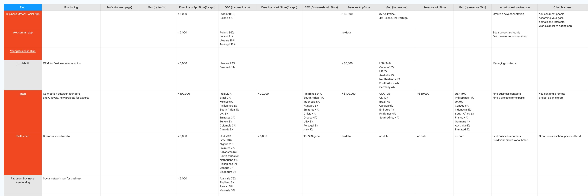
My competitor table: downloads, revenue by country, jobs to be done and features for each product. Interviews and synthesis
We grouped visitor goals, pains and fears. The strongest insights were fears: feeling awkward and getting unwanted contacts.
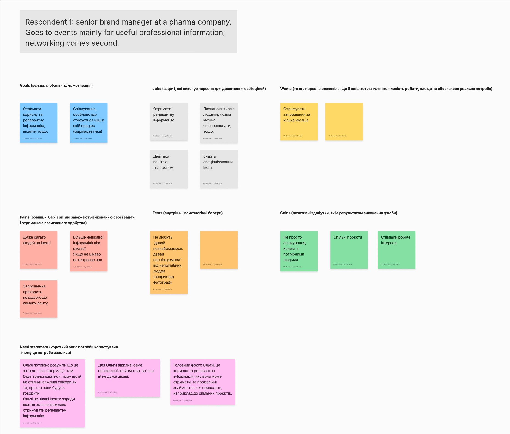
One of my interview profiles (in Ukrainian). Goals, jobs, pains, fears and gains lead to a need statement. The name is hidden. How might we
We turned insights into “How might we” questions for each stage of an event and voted. The top group: find the right people before the event, and share contacts without pressure.
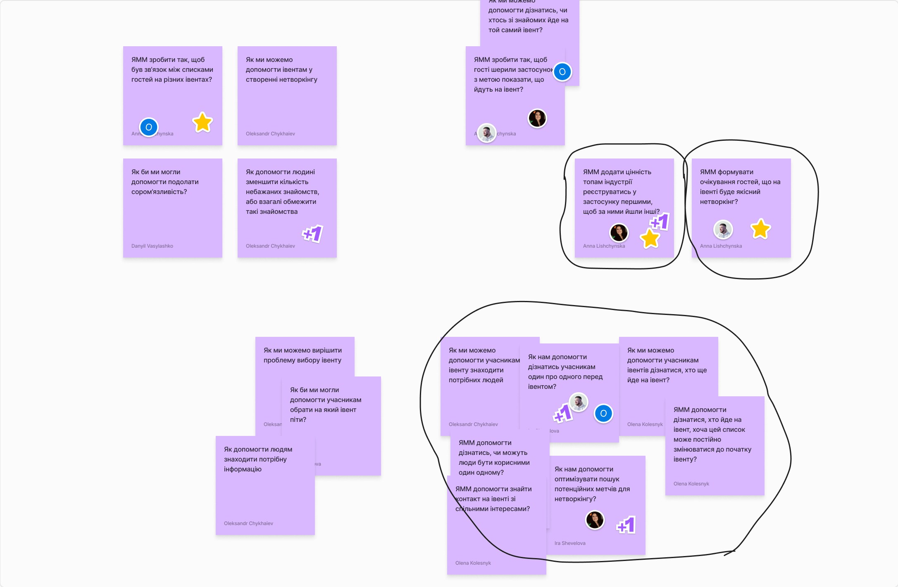
“How might we” questions for the stage before the event (in Ukrainian). Circled groups got the most votes. Prioritization
We placed ideas on an impact vs. effort matrix. In the MVP: participant filters, a “save contact” button on every screen, news from organizers, the event agenda. Later: paid groups, likes and questions for speakers, ready-made first messages.
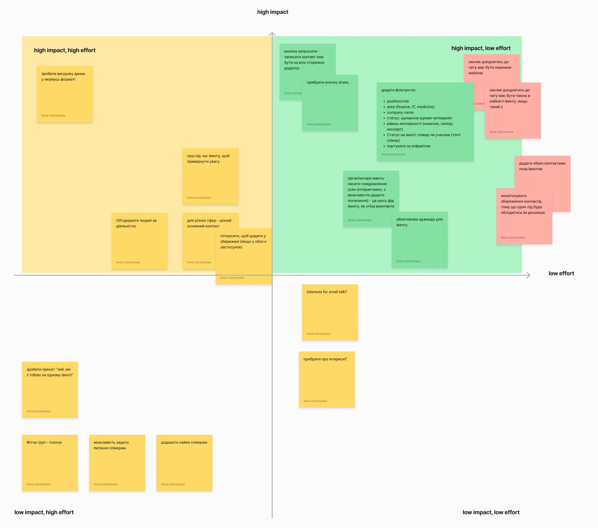
The impact vs. effort matrix (in Ukrainian). The green high impact, low effort quadrant became the MVP.
04
Key decisions
Four UX decisions we made as a team. For each: what we chose, why, and what we gave up.
1 Contacts stay hidden until both people agree
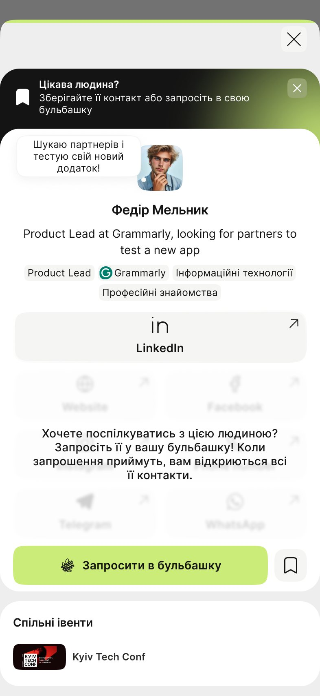
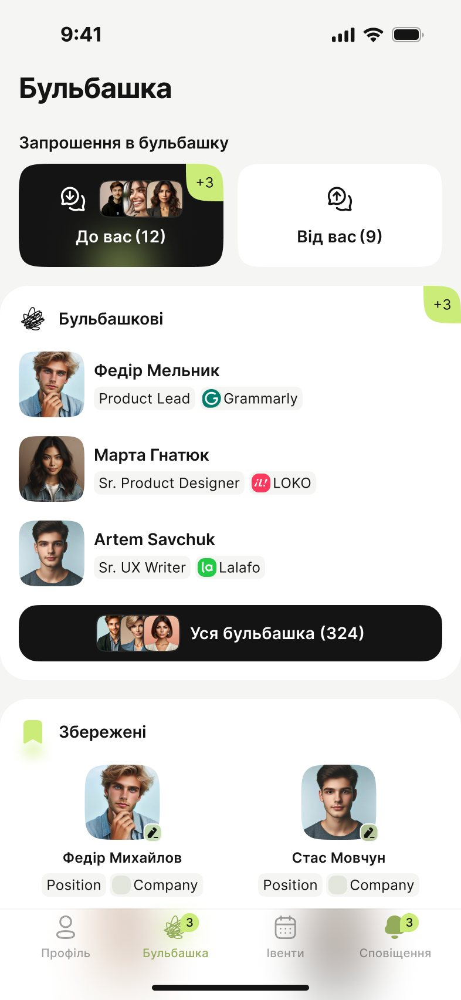
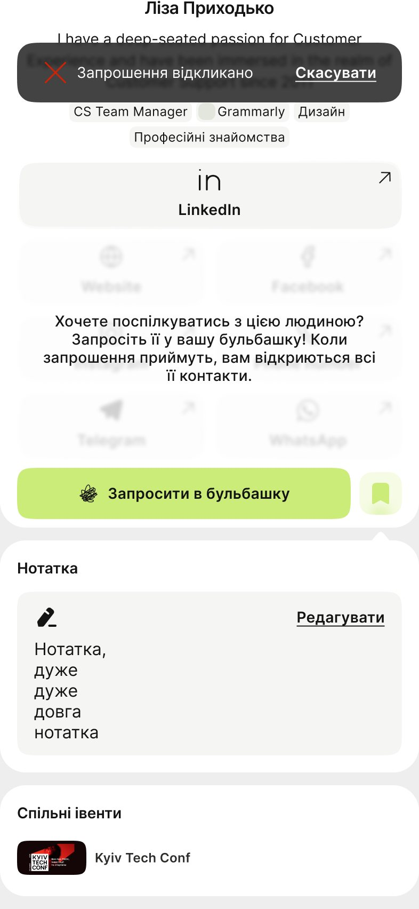
- Decided
- You can save anyone privately, and they don’t see it. To exchange contacts, you invite a person to your “bubble”. Contacts open only when they accept.
- Why
- People are shy to ask for contacts. A private save has no pressure, and saying no to an invite is quiet and easy.
- Trade-off
- One more step before you can message someone.
2 Active filters stay visible above the list
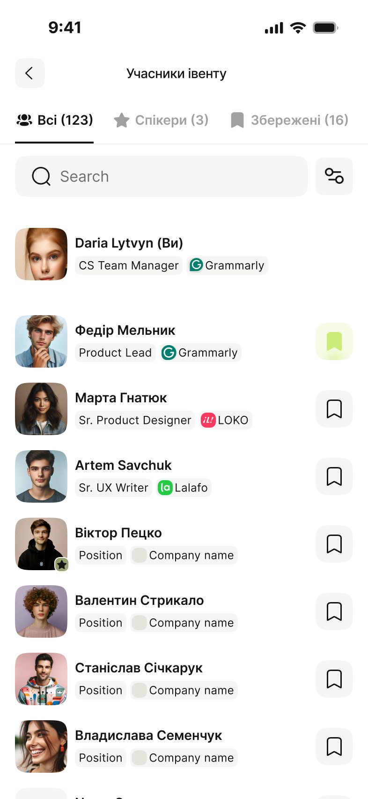
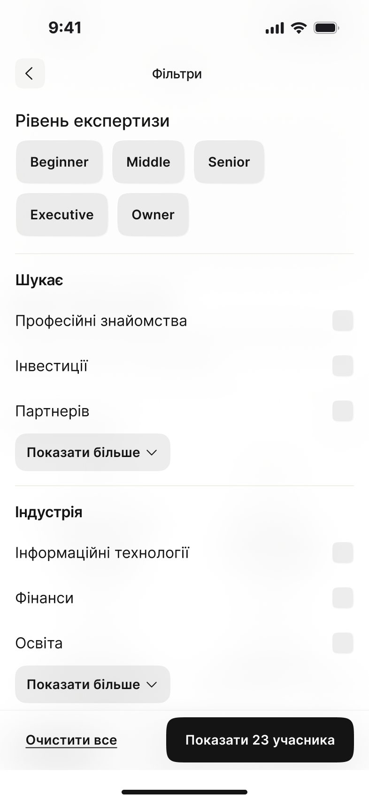
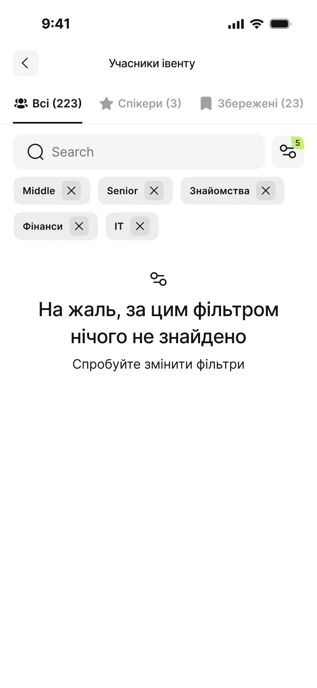
- Decided
- The event page shows all participants, not only speakers. You filter by level, goal and industry, and active filters stay on top as chips.
- Why
- The most common wish in interviews was “show me who will come”. Chips show at a glance why the list looks the way it does.
- Rejected for the MVP
- Automatic matching. Filters were simpler to build and easier to understand.
3 Onboarding has three short steps
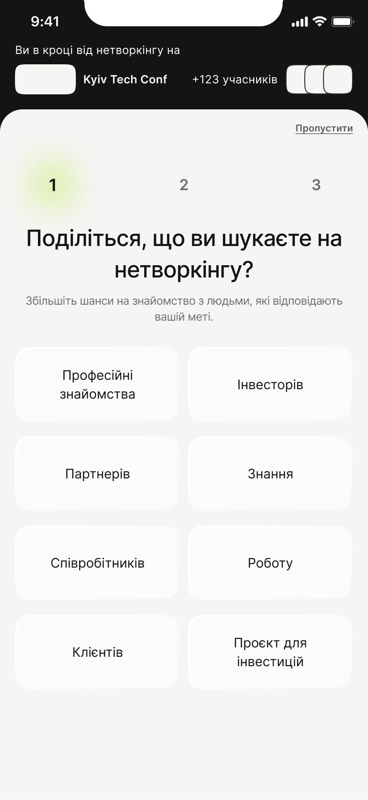
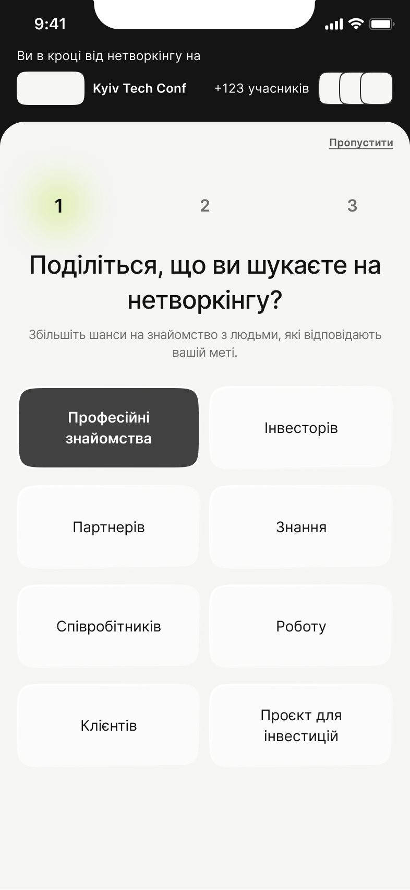
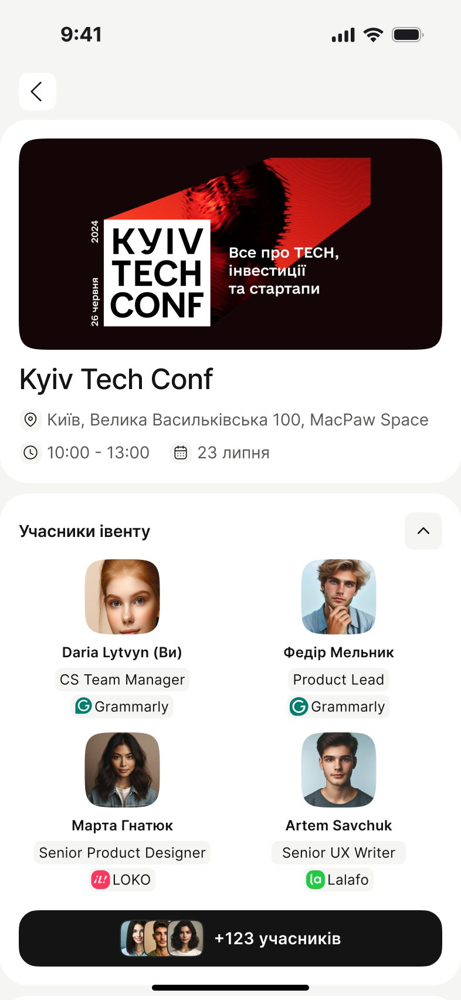
- Decided
- Goal, level, industry. Each step can be skipped, and the top bar shows which event you are joining.
- Why
- These answers power the filters. A long form would stop people at the event door. We tried several versions before this one.
- Trade-off
- Profiles are thin at the start.
4 Contacts can leave the app
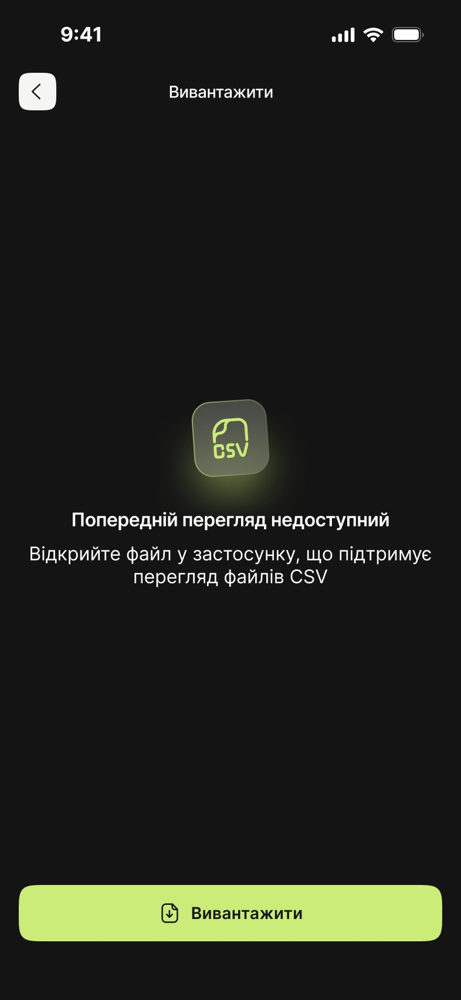
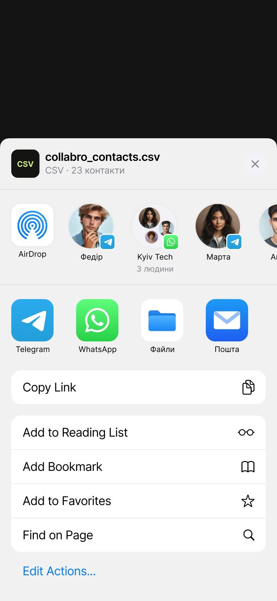
- Decided
- After the event, you export all contacts in one tap and share the file.
- Why
- People already keep contacts in many places. If the app became one more place, the problem would stay.
- Trade-off
- Less reason to come back to the app.
05
Final UI
The visitor flow goes from onboarding to the event page, participants, a profile, the bubble and contact export (all shown above). Around it, we designed the states, so the user always knows what to do next. Click any screen to see it full size.
States
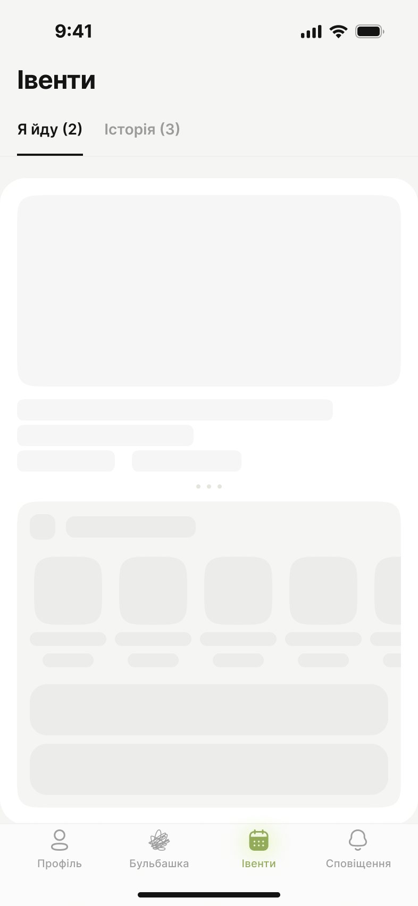
06
Outcome & learnings
What happened: the MVP launched as Collabro (collabro.space). After launch the team shifted its focus toward event organizers. I don’t have product numbers from after launch, so I don’t show any.
Fears are design requirements
The most useful insights were not wishes but fears: feeling awkward and getting unwanted contacts. Our main idea, the bubble, came from them.
Talk to both sides early
We designed mostly for visitors, but the app only works if organizers bring it to their event. Next time I would interview organizers earlier.
Research is a team sport
My competitor map and interview profiles were inputs; the decisions came from voting and prioritizing together.
What I would improve
The empty filter screen only says “change the filters”. I would add a “Clear filters” button and design error states, which the MVP didn’t cover.